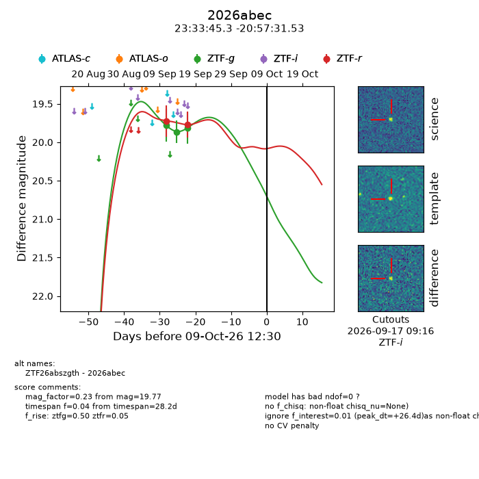
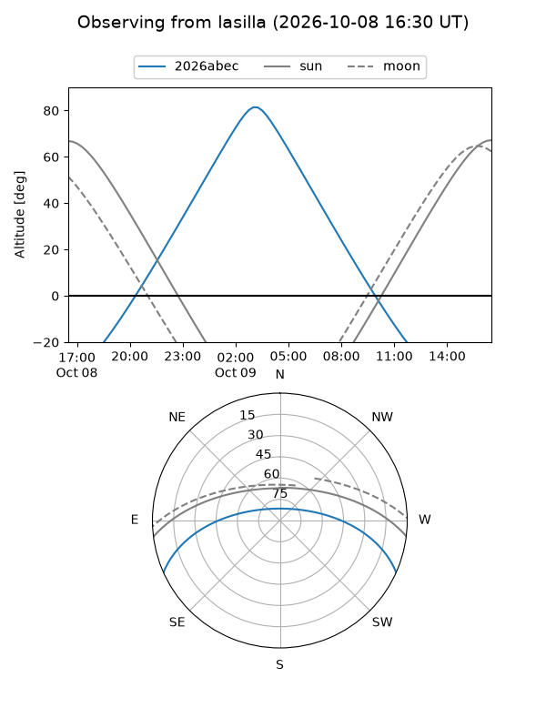
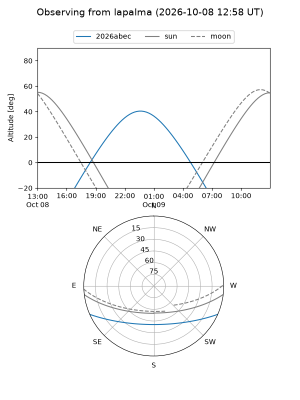
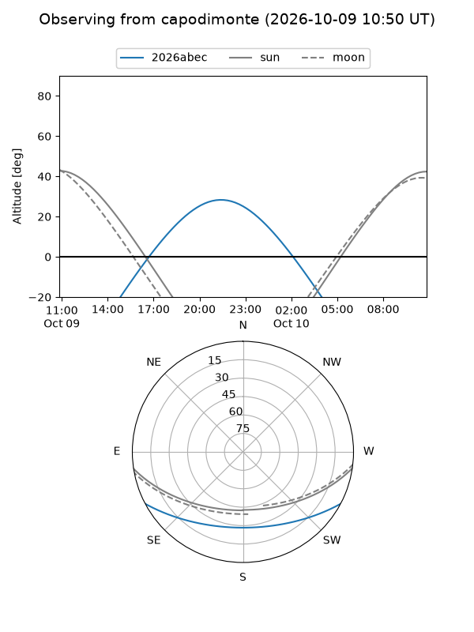
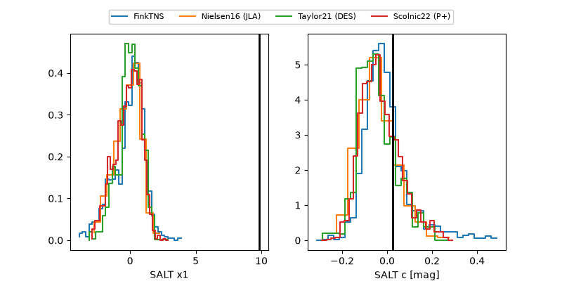

2026abec
Target 2026abec at 2026-10-09 12:32
Aliases and brokers:
FINK-ZTF: ztf.fink-portal.org/ZTF26abszgth
Lasair-ZTF: lasair-ztf.lsst.ac.uk/objects/ZTF26abszgth
ALeRCE-ZTF: alerce.online/object/ZTF26abszgth
YSE-PZ: ziggy.ucolick.org/yse/transient_detail/2026abec
TNS name: wis-tns.org/object/2026abec
Direct TNS query: direct search
alt names
ZTF26abszgth (ztf,fink_ztf)
2026abec (tns,yse)
Coordinates:
equatorial (ra, dec) = 353.4389,-20.95876
equatorial (HMS+DMS) = 23:33:45.34,-20:57:31.53
galactic (l, b) = (47.9395,-71.24843)
Flags:
peak dt: +26.4
Photometry:
last ztfg=19.81, ztfr=19.77
3 ztfg, 2 ztfr detections
Lightcurve

Visibility



Additional plots
